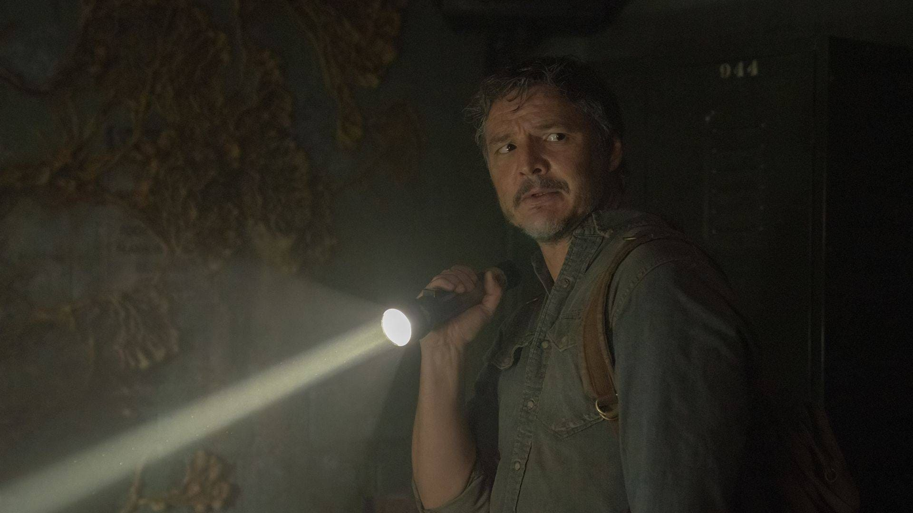
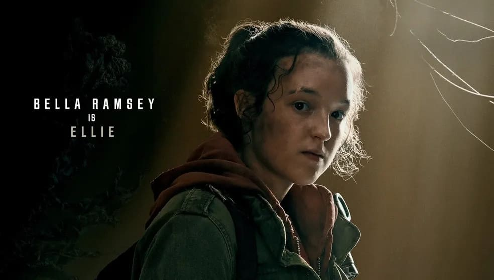
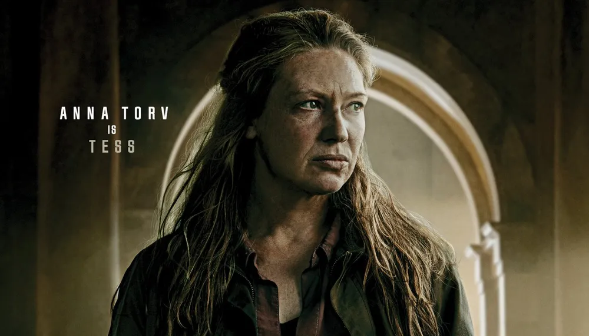
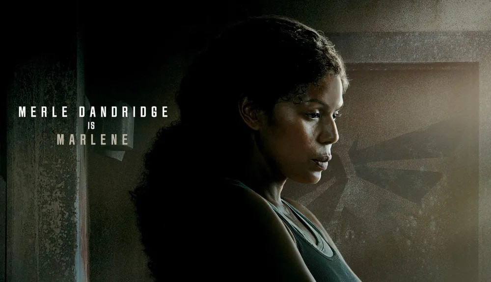

The last of Us é uma série
distópica da HBO baseda na
franquia de jogos de
video game de mesmo nome
criada por Niel Druckmann.
O drama narra um futuro
pandêmico que foi
devastador para humanidade,
deixando os seres humanos á
beira da extinção.
Conheça os personagens e seu elenco principal
Pedro Pascal (Joel)Bella Ramsey (Ellie)Anna Torv (Tess)Marle Dandrige (Marlene)
Estrelado por Pedro Pascal (O Mandaloriano) e Bella Ramsey (Game of Thrones),
Além de Pascal e Ramsey no papel principal de Joel e Ellie, o elenco conta com Anna Torv (Fringe) como Teressa, Merle Dandridge (A Comissária de Bordo) como Marlene.
Pedro Pascal como Joel Miller

Joel é o protagonista de The Last of Us, onde acompanhamos sua vida durante e depois do surto (como é chamada a transmissão fúngica ocorrida na série). O protagonista era um construtor antes do evento, quando tinha 36 anos. Foi na noite de seu aniversário que fugiu com a filha Sarah e o irmão Tommy para um lugar seguro, mas uma tragédia mudou sua vida para sempre. Após 20 anos do ocorrido, ele faz pequenos trabalhos em um assentamento de sobreviventes em Boston - além de contrabandear itens ilícitos.
Bella Ramsey como Ellie Williams

A adolescente Ellie é uma garota órfã de 14 anos que viveu aos cuidados da FEDRA (sigla em inglês para Agência Federal de Resposta a Desastres), mas que após sua fuga foi parar em uma instalação dos Vaga-lumes. Inicialmente é vista como uma "carga" por Joel; porém, durante as explorações feitas entre os dois, a relação entre eles se torna mais fraternal. Ellie é protegida por Marlene pois esconde em seu organismo uma possível resposta ao surto de Cordyceps (fungo responsável pela pandemia). Mesmo infectada, ela não desenvolve a doença como outros.
Anna Torv como Tess

A durona companheira de Joel o auxilia nas missões de contrabando dentro de Boston. Na série, é sugerido que Tess tem um relacionamento amoroso com o protagonista, algo que no jogo não chegou a ser explorado. É da contrabandista a ideia de ajudar Marlene com o transporte de Ellie até Massachusetts, o que desagradou Joel no início. Assim como o parceiro, Tess é rude e sem medo de partir para briga.
Merle Dandridge como Marlene

A personagem é líder dos Vaga-lumes em Boston, uma guerrilha que surgiu no pós-surto e que considera a FEDRA uma instituição autoritária e que deseja pôr em seu lugar a restituição do governo. É ela quem solicita os trabalhos de Joel e Tess para levarem Ellie até outro agrupamento da guerrilha em Massachusetts. Marlene mantém em segredo dos demais subordinados o potencial de Ellie para uma cura contra a transmissão do Cordyceps. Ela também sabe quem é a mãe de Ellie, com quem conviveu antes do nascimento da jovem.
Vale lembrar que Merle Dandridge é uma das escalações de elenco vindas do jogo. A atriz fez a dublagem e captura de movimentos para a personagem Marlene nos dois games da franquia.